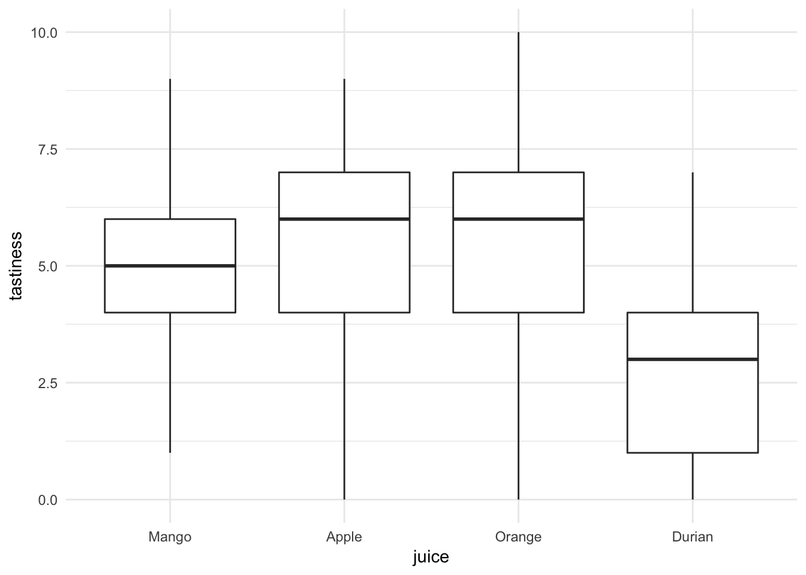
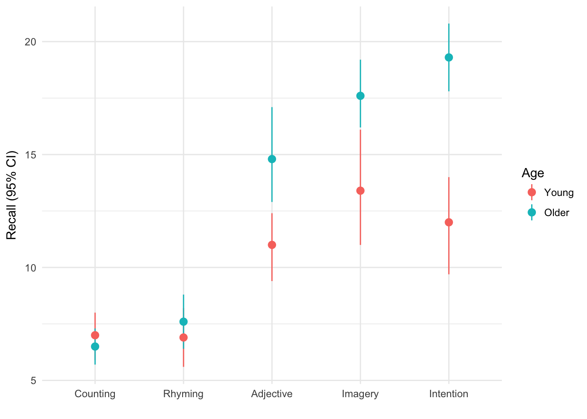
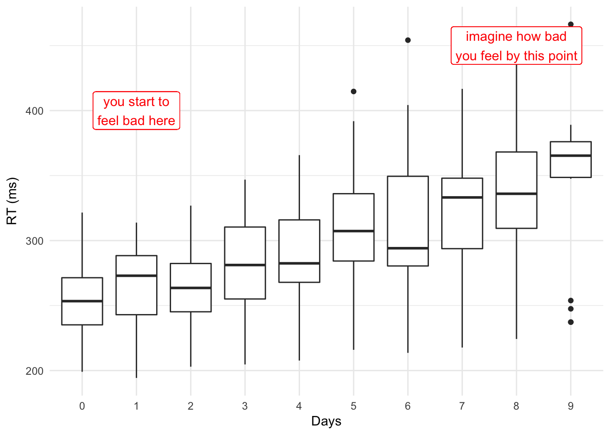
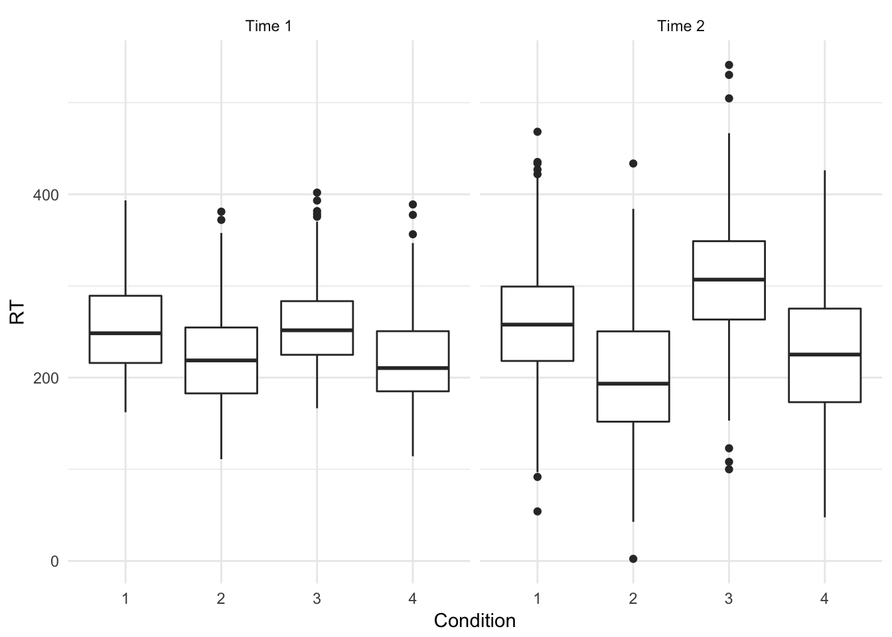
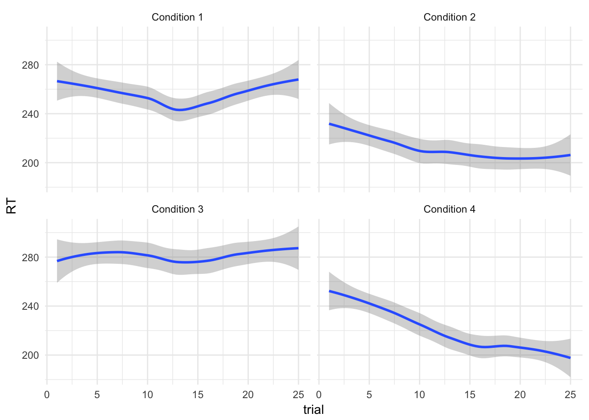
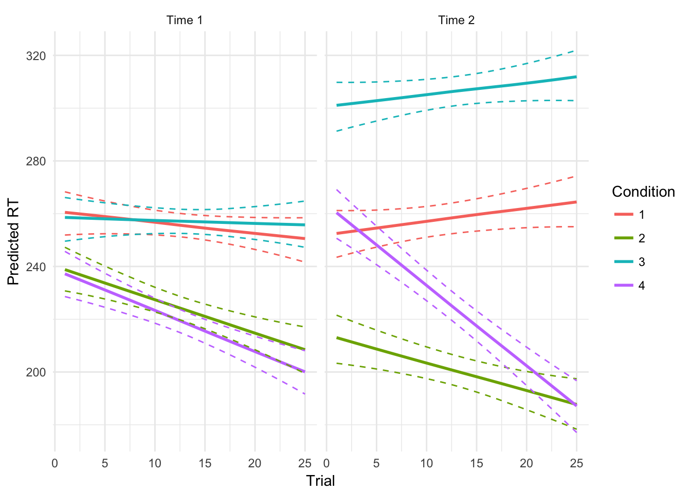

Anova ‘Cookbook’
This section is intended as a shortcut to running Anova for a variety of common types of model. If you want to understand more about what you are doing, read the section on principles of Anova in R first, or consult an introductory text on Anova which covers Anova [e.g. @howell2012statistical].
Between-subjects Anova
Oneway Anova (> 2 groups)
If your design has more than 2 groups then you should use oneway Anova.
Let’s say we asked people to taste 1 of 4 fruit juices, and rate how tasty it was on a scale from 0 to 10:

We can run a oneway Anova with type 3 sums of squares using the Anova function from the car:: package:
juice.lm <- lm(tastiness ~ juice, data=tasty.juice)
juice.anova <- car::Anova(juice.lm, type=3)
juice.anova
## Anova Table (Type III tests)
##
## Response: tastiness
## Sum Sq Df F value Pr(>F)
## (Intercept) 615.04 1 114.4793 < 2.2e-16 ***
## juice 128.83 3 7.9932 8.231e-05 ***
## Residuals 515.76 96
## ---
## Signif. codes: 0 '***' 0.001 '**' 0.01 '*' 0.05 '.' 0.1 ' ' 1And we could compute the contasts for each fruit against the others (the grand mean):
juice.lsm <- lsmeans::lsmeans(juice.lm, pairwise~juice, adjust="fdr")
juice.contrasts <- summary(lsmeans::contrast(juice.lsm, "eff"))
juice.contrasts
## contrast estimate SE df t.ratio p.value
## Mango effect 0.25 0.4014661 96 0.623 0.5349
## Apple effect 1.01 0.4014661 96 2.516 0.0271
## Orange effect 0.65 0.4014661 96 1.619 0.1450
## Durian effect -1.91 0.4014661 96 -4.758 <.0001
##
## P value adjustment: fdr method for 4 testsWe found a significant main effect of juice, F(3, 96) = 7.99, p < .001. Followup tests (adjusted for false discovery rate) indicated that only Durian differed from the other juices, and was rated a significantly less tasty Mango, Apple, and Orange juice, B = -1.91 (0.40), t = -4.76, p < .001
Factorial Anova
We are using a dataset from Howell [@howell2012statistical, chapter 13]: an experiment which recorded Recall among young v.s. older adults (Age) for each of 5 conditions.
These data would commonly be plotted something like this:
eysenck <- readRDS("data/eysenck.Rdata")
eysenck %>%
ggplot(aes(Condition, Recall, group=Age, color=Age)) +
stat_summary(geom="pointrange", fun.data = mean_cl_boot) +
ylab("Recall (95% CI)") +
xlab("")
Visual inspection of the data (see Figure X) suggested that older adults recalled more words than younger adults, and that this difference was greatest for the intention, imagery, and adjective conditions. Recall peformance was worst in the counting and rhyming conditions.
Or alternatively if we wanted to provde a better summary of the distribution of the raw data we could use a boxplot:
eysenck %>%
ggplot(aes(Age, Recall)) +
geom_boxplot(width=.33) +
facet_grid(~Condition) +
ylab("Recall (95% CI)") +
xlab("")Figure 2.2: Boxplot for recall in older and young adults, by condition.
We can run a linear model including the effect of Age and Condition and the interaction of these variables, and calculate the Anova:
eysenck.model <- lm(Recall~Age*Condition, data=eysenck)
car::Anova(eysenck.model, type=3)
## Anova Table (Type III tests)
##
## Response: Recall
## Sum Sq Df F value Pr(>F)
## (Intercept) 490.00 1 61.0550 9.85e-12 ***
## Age 1.25 1 0.1558 0.6940313
## Condition 351.52 4 10.9500 2.80e-07 ***
## Age:Condition 190.30 4 5.9279 0.0002793 ***
## Residuals 722.30 90
## ---
## Signif. codes: 0 '***' 0.001 '**' 0.01 '*' 0.05 '.' 0.1 ' ' 1Repeated measures or ‘split plot’ designs
It might be controversial to say so, but the tools to run traditional repeat measures Anova in R are a bit of a pain to use. Although there are numerous packages simplify the process a little, their syntax can be obtuse or confusing. To make matters worse, various textbooks, online guides and the R help files themselves show many ways to achieve the same ends, and it can be difficult to follow the differences between the underlying models that are run.
At this point, given the many other advantages of linear mixed models over traditional repeated measures Anova, and given that many researchers abuse traditional Anova in practice (e.g. using it for unbalanced data, or where some data are missing), the recommendation here is to simply give up and learn how to run linear mixed models. These can (very closely) replicate traditional Anova approaches, but also:
Handle missing data or unbalanced designs gracefully and efficiently.
Be expanded to include multiple levels of nesting. For example, allowing pupils to be nested within classes, within schools. Alternatively multiple measurements of individual patients might be clustered by hospital or therapist.
Allow time to be treated as a continuous variable. For example, time can be modelled as a slope or some kind of curve, rather than a fixed set of observation-points. This can be more parsimonious, and more flexible when dealing with real-world data (e.g. from clinical trials).
It would be best at this point to jump straight to the main section multilevel or mixed-effects models, but to give one brief example of mixed models in use:
The sleepstudy dataset in the lme4 package provides reaction time data recorded from participants over a period of 10 days, during which time they were deprived of sleep.
lme4::sleepstudy %>%
head(12) %>%
pander| Reaction | Days | Subject |
|---|---|---|
| 249.6 | 0 | 308 |
| 258.7 | 1 | 308 |
| 250.8 | 2 | 308 |
| 321.4 | 3 | 308 |
| 356.9 | 4 | 308 |
| 414.7 | 5 | 308 |
| 382.2 | 6 | 308 |
| 290.1 | 7 | 308 |
| 430.6 | 8 | 308 |
| 466.4 | 9 | 308 |
| 222.7 | 0 | 309 |
| 205.3 | 1 | 309 |
We can plot these data to show the increase in RT as sleep deprivation continues:
lme4::sleepstudy %>%
ggplot(aes(factor(Days), Reaction)) +
geom_boxplot() +
xlab("Days") + ylab("RT (ms)") +
geom_label(aes(y=400, x=2, label="you start to\nfeel bad here"), color="red") +
geom_label(aes(y=450, x=9, label="imagine how bad\nyou feel by this point"), color="red") 
If we want to test whether there are significant differences in RTs between Days, we could fit something very similar to a traditional repeat measures Anova using the lme4::lmer() function, and obtain an Anova table for the model using the special lmerTest::anova() function:
sleep.model <- lmer(Reaction ~ factor(Days) + (1 | Subject), data=lme4::sleepstudy)
lmerTest::anova(sleep.model)
## Analysis of Variance Table of type III with Satterthwaite
## approximation for degrees of freedom
## Sum Sq Mean Sq NumDF DenDF F.value Pr(>F)
## factor(Days) 166235 18471 9 153 18.703 < 2.2e-16 ***
## ---
## Signif. codes: 0 '***' 0.001 '**' 0.01 '*' 0.05 '.' 0.1 ' ' 1Traditional repeated measures Anova
If you really need to fit the traditional repeated measures Anova (e.g. your supervisor/reviewer has asked you to) then you should use either the afex:: or ez:: packages.
Let’s say we have an experiment where we record reaction 25 times (Trial) before and after (Time = {1, 2}) one of 4 experimental manipulations (Condition = {1,2,3,4}). You have 12 participants in each condition and no missing data:
expt.data %>%
ggplot(aes(Condition, RT)) +
geom_boxplot() +
facet_wrap(~paste("Time", time))
We want to use our repeated measurements before and after the experimental interventions to increase the precision of our estimate of the between-condition differences.
Our first step is to aggregate RTs for the multiple trials, taking the mean across all trials at a particular time:
expt.data.agg <- expt.data %>%
group_by(Condition, person, time) %>%
summarise(RT=mean(RT))
head(expt.data.agg)
## Source: local data frame [6 x 4]
## Groups: Condition, person [3]
##
## Condition person time RT
## <fctr> <fctr> <fctr> <dbl>
## 1 1 1 1 260.8600
## 2 1 1 2 265.6524
## 3 1 2 1 279.1190
## 4 1 2 2 267.0095
## 5 1 3 1 254.3760
## 6 1 3 2 256.4459Because our data are still in long form (we have two rows per person), we have to explicitly tell R that time is a within subject factor. Using the afex:: package we would write:
expt.afex <- afex::aov_car(RT ~ Condition * time + Error(person/time),
data=expt.data.agg)
expt.afex$anova_table %>%
pander(caption="`afex::aov_car` output.")| num Df | den Df | MSE | F | ges | Pr(>F) | |
|---|---|---|---|---|---|---|
| Condition | 3 | 44 | 158.6 | 159.4 | 0.8504 | 1.193e-23 |
| time | 1 | 44 | 144.6 | 11.87 | 0.114 | 0.001266 |
| Condition:time | 3 | 44 | 144.6 | 37.79 | 0.5513 | 3.073e-12 |
Using the ez:: package we would write:
expt.ez <- ez::ezANOVA(data=expt.data.agg,
dv = RT,
wid = person,
within = time,
between = Condition)
expt.ez$ANOVA %>%
pander(caption="`ez::ezANOVA` output.")| Effect | DFn | DFd | F | p | p<.05 | ges | |
|---|---|---|---|---|---|---|---|
| 2 | Condition | 3 | 44 | 159.4 | 1.193e-23 | * | 0.8504 |
| 3 | time | 1 | 44 | 11.87 | 0.001266 | * | 0.114 |
| 4 | Condition:time | 3 | 44 | 37.79 | 3.073e-12 | * | 0.5513 |
These are the same models: any differences in the output are simply due to rounding. You should use whichever of ez:: and afex:: you find easiest to understand
The ges column is the generalised eta squared effect-size measure, which is preferable to the partial eta-squared reported by SPSS [@bakeman2005recommended].
But what about [insert favourite R package for Anova]?
Lots of people like ez::ezANOVA and other similar packages. My problem with ezANOVA is that it doesn’t use formulae to define the model and for this reason encourages students to think of Anova as something magical and separate from linear models and regression in general.
This guide is called ‘just enough R’, so I’ve mostly chosen to show only car::Anova because I find this the most coherent method to explain. Using formulae to specify the model reinforces a technique which is useful in many other contexts. I’ve make an exception for repeated because many people find specifying the error structure explicitly confusing and hard to get right, and so ez:: may be the best option in these cases.
Comparison with a multilevel model
For reference, a broadly equivalent (although not identical) multilevel model would be:
expt.mlm <- lmer(RT ~ Condition * time + (1|person),
data=expt.data.agg)
anova(expt.mlm) %>%
pander()| Sum Sq | Mean Sq | NumDF | DenDF | F.value | Pr(>F) | |
|---|---|---|---|---|---|---|
| Condition | 69154 | 23051 | 3 | 44 | 159.4 | 0 |
| time | 1716 | 1716 | 1 | 44 | 11.87 | 0.001266 |
| Condition:time | 16394 | 5465 | 3 | 44 | 37.79 | 3.073e-12 |
Although with a linear mixed model it would also be posible to analyse the trial-by-trial data. Let’s hypothesise, for example, that subjects in Conditions 2 and 4 experienced a ‘practice effect’, such that their RTs reduced over multiple trials. If we plot the data, we can see this suspicion may be supported (how conveninent!):
ggplot(expt.data,
aes(trial, RT)) +
geom_smooth() +
facet_wrap(~paste("Condition", Condition))
If we wanted to replicate the aggregated RM Anova models shown above we could write:
options(contrasts = c("contr.sum", "contr.poly"))
expt.mlm2 <- lmer(RT ~ Condition * time + (time|person), data=expt.data)
anova(expt.mlm2)
## Analysis of Variance Table of type III with Satterthwaite
## approximation for degrees of freedom
## Sum Sq Mean Sq NumDF DenDF F.value Pr(>F)
## Condition 1391631 463877 3 64.082 129.803 < 2.2e-16 ***
## time 32791 32791 1 71.596 9.176 0.00341 **
## Condition:time 313212 104404 3 71.596 29.215 1.911e-12 ***
## ---
## Signif. codes: 0 '***' 0.001 '**' 0.01 '*' 0.05 '.' 0.1 ' ' 1But we can now add a continuous predictor for trial:
expt.mlm.bytrial <- lmer(RT ~ Condition * time * trial +
(time|person),
data=expt.data)
anova(expt.mlm.bytrial)
## Analysis of Variance Table of type III with Satterthwaite
## approximation for degrees of freedom
## Sum Sq Mean Sq NumDF DenDF F.value Pr(>F)
## Condition 181589 60530 3 591.06 17.3653 8.114e-11 ***
## time 7744 7744 1 670.24 2.2218 0.13655
## trial 81015 81015 1 2339.99 23.2424 1.520e-06 ***
## Condition:time 94032 31344 3 670.24 8.9923 7.612e-06 ***
## Condition:trial 126361 42120 3 2339.99 12.0839 7.557e-08 ***
## time:trial 109 109 1 2339.99 0.0314 0.85943
## Condition:time:trial 27086 9029 3 2339.99 2.5902 0.05125 .
## ---
## Signif. codes: 0 '***' 0.001 '**' 0.01 '*' 0.05 '.' 0.1 ' ' 1The significant Condition:trial term indicates that there was a difference in the practice effects between the experimental conditions.
We found a significant interaction between condition and the linear term for trial number, F(3, 2340.18) = 10.83, p < .001. We explored this effect by plotting model-estimated reaction times for each group for trials 1 through 25 (see Figure X): participants in condition 2 and 4 exprienced a greater reduction in RTs across trial, suggesting a larger practice effect for these conditions.

See the multilevel models section for more details, including analyses which allow the effects of interventions to vary between participants (i.e., relaxing the assumption that an intervention will be equally effective for all participants).
RM Anova v.s. multilevel models
The RM Anova is perhaps more familiar, and may be conventional in your field which can make peer review easier (although in other fields mixed models are now expected where the design warrants it).
RM Anova requires complete data: any participant with any missing data will be dropped from the analysis. This is problematic where data are expensive to collect, and where data re unlikely to be missing at random, for example in a clinical trial. In these cases RM Anova may be less efficient and more biased than an equivalent multilevel model.
There is no simple way of calculating effect size measures like eta2 from the
lmermodel. This may or may not be a bad thing. @baguley2009standardized, for example, recommends reporting simple (rather than standardised) effect size measures, and is easily done by making predictions from the model.